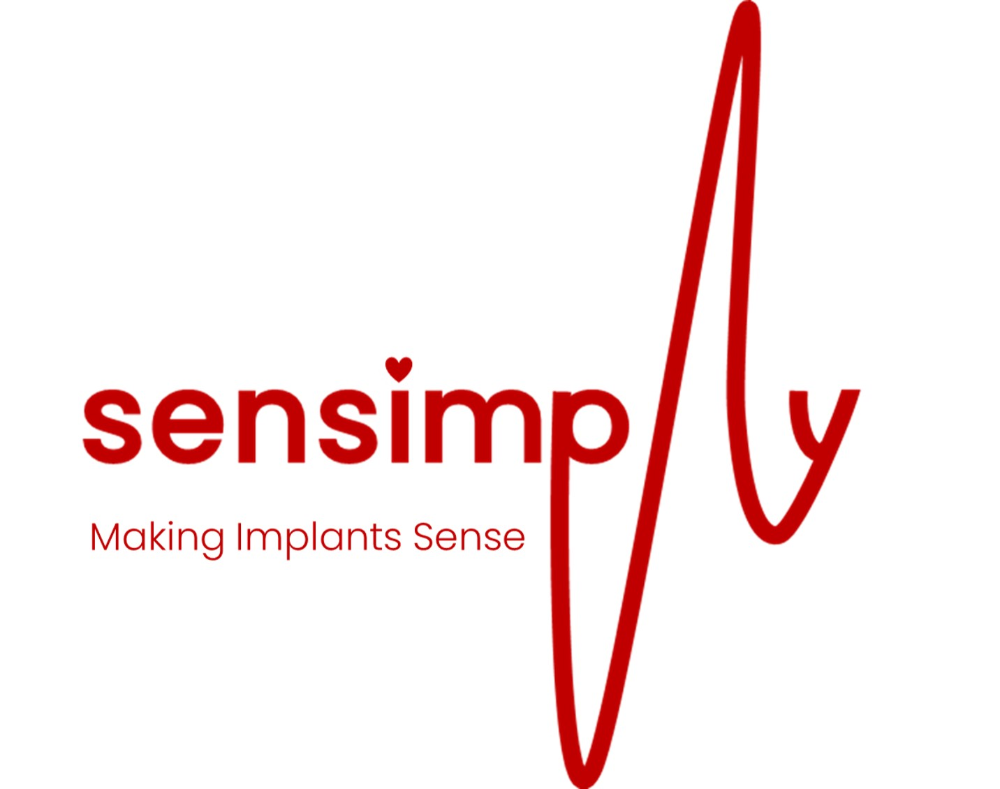
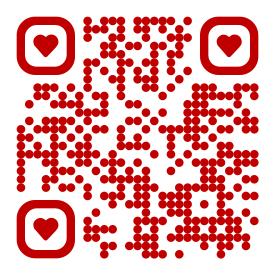
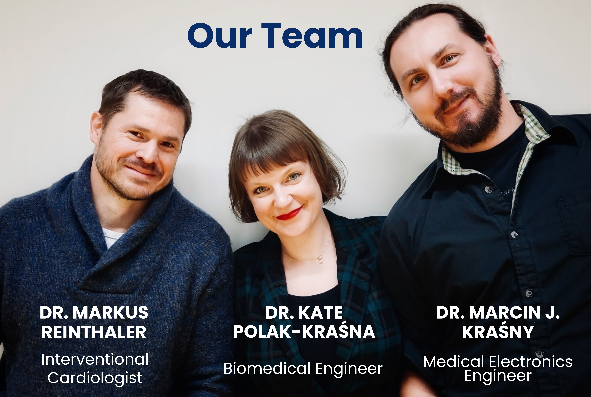
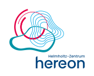

Sensimply develops sensor-based cardiovascular implants to improve device performance and clinical outcomes in patients with cardiovascular diseases.
Interested in finding out more? Get directly in touch!


